Arval AutoSelect · Logo · Menu
Sticky header
OK · bez drabinyCo widzimy
Klikalne: logo → HP, każdy link menu → sekcja, ikona ulubione → lista, ikona kontakt → formularz/numer.8 elementów · 8 z werdyktem
Co jest na stronie i w jakiej kolejności widzi to klient. Strona ma 4587 px wysokości.
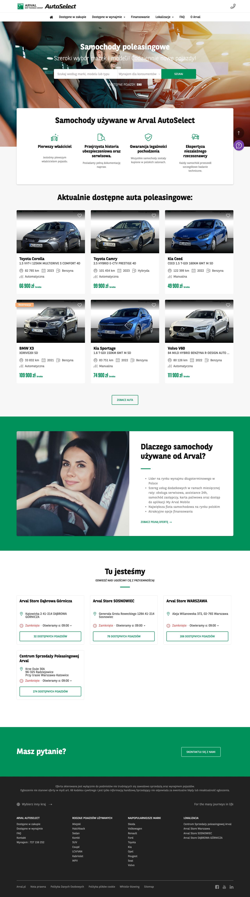
1 2 3 4 5 6 7 8| # | Etykieta (jak na stronie) | Element | Obserwacje | Etap i funkcja na ścieżce zakupowej | Od góry strony |
|---|---|---|---|---|---|
| 1 | Arval AutoSelect · Logo · Menu | Sticky header | Klikalne: logo → HP, każdy link menu → sekcja, ikona ulubione → lista, ikona kontakt → formularz/numer. | brak opisu | 0 px |
| 2 | Arval AutoSelect - Samochody poleasingowe | Baner główny | Klikalne: button SZUKAJ → filtrowane wyniki pojazdów. | brak opisu | 110 px |
| 3 | Szukaj według marki, modelu lub typu · Wynajem dla konsumentów | search_bar_vehicle | Klikalne: pole tekstowe, dropdown, przycisk SZUKAJ → filtrowane wyniki. | brak opisu | 460 px |
| 4 | Samochody używane w Arval AutoSelect | Pasek USP / Trust Bar | Statyczna sekcja informacyjna, bez elementów klikalnych. | budowanie zaufania i komunikacja USP pojazdu poleasingowego | 553 px |
| 5 | Aktualnie dostępne auta poleasingowe: | best_deals_section | Klikalne: karta pojazdu → PDP, ikona serca → wishlist, ZOBACZ AUTA → pełny listing. | brak opisu | 943 px |
| 6 | Dlaczego samochody używane od Arval? | social_proof_strip | Statyczna sekcja perswazji, bez elementów klikalnych. | brak opisu | 2130 px |
| 7 | Komisariaty Arval | locations_section | Klikalne: strzałki karuzeli, każda karta → szczegóły lokalizacji. | brak opisu | 2816 px |
| 8 | ARVAL AUTOSELECT · Nota prawna · Polityka Danych Osobowych | footer | Klikalne: wszystkie linki w stopce. | brak opisu | 3971 px |
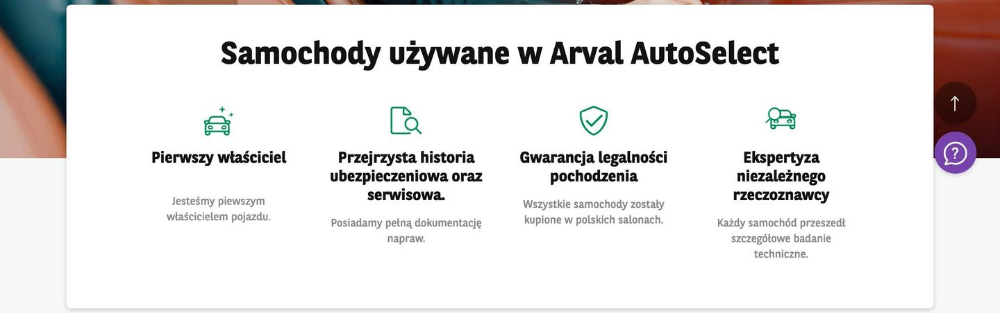
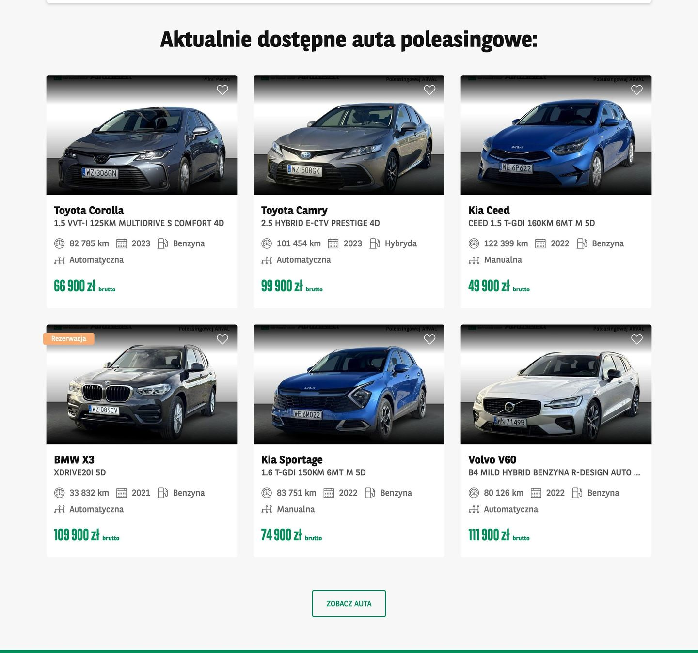
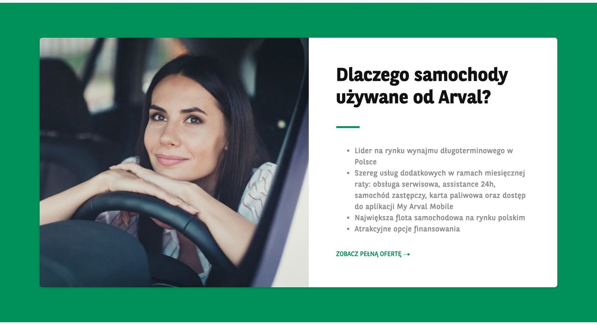
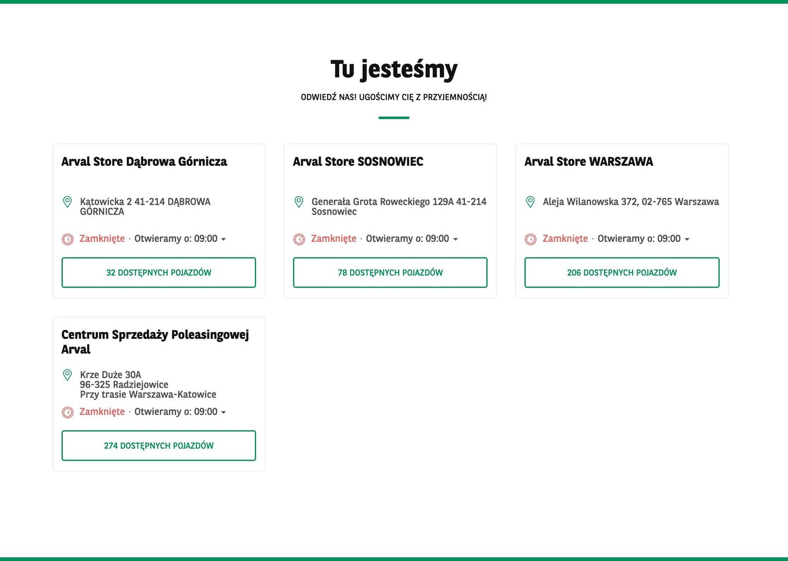
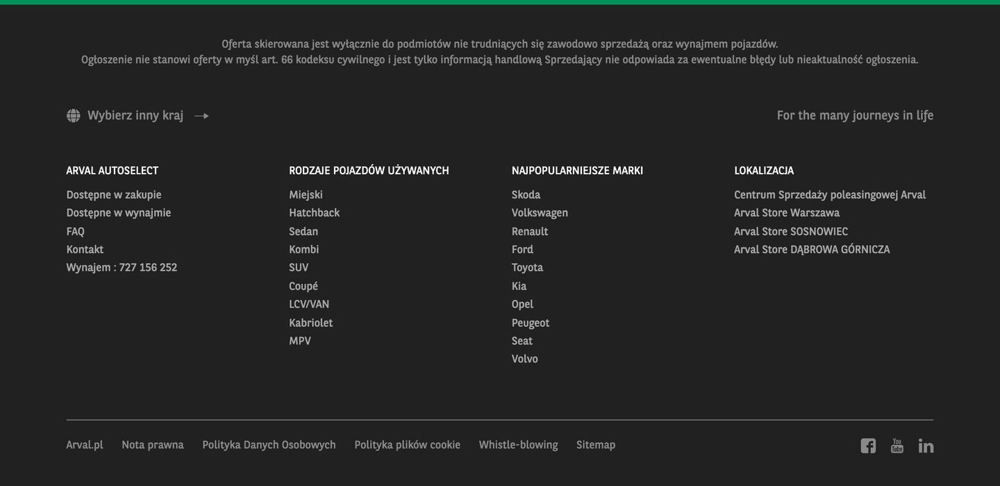
10 elementów · 10 z werdyktem
Co jest na stronie i w jakiej kolejności widzi to klient.
| # | Etykieta (jak na stronie) | Element | Obserwacje | Etap i funkcja na ścieżce zakupowej | Od góry strony |
|---|---|---|---|---|---|
| 1 | Arval AutoSelect · Logo · Hamburger | Sticky header | Klikalne: logo → HP, hamburger → otwórz menu. | brak opisu | 0 px |
| 2 | Premium pojazdy - Hero na mobile | hero_banner_mobile | Klikalne: button CTA → wyszukiwanie lub listing. | brak opisu | 50 px |
| 3 | Wyszukiwarka - wersja mobile | search_bar_vehicle_mobile | Klikalne: każde pole, przycisk Szukaj. | brak opisu | 300 px |
| 4 | Popularne marki - scrollowalna | brands_grid_mobile | Klikalne: każda marka → listing, scroll boczny → przewijanie marek. | brak opisu | 450 px |
| 5 | Nowe oferty - vertical stack | featured_offers_mobile | Klikalne: kartka → PDP, serca → wishlist, scroll w dół → więcej pojazdów. | brak opisu | 570 px |
| 6 | Newsletter - mobile form | newsletter_signup_mobile | Klikalne: input email, przycisk submit. | brak opisu | 1470 px |
| 7 | FAQ - accordion | faq_section_mobile | Klikalne: każdy accordion → rozwiń/zwiń. | brak opisu | 1600 px |
| 8 | Lokalizacje Arval | locations_section_mobile | Klikalne: każdy link lokalizacji. | brak opisu | 1950 px |
| 9 | Liczby - social proof | social_proof_strip_mobile | Statyczne. | brak opisu | 2200 px |
| 10 | Footer - mobile | footer_mobile | Klikalne: wszystkie linki. | brak opisu | 2320 px |
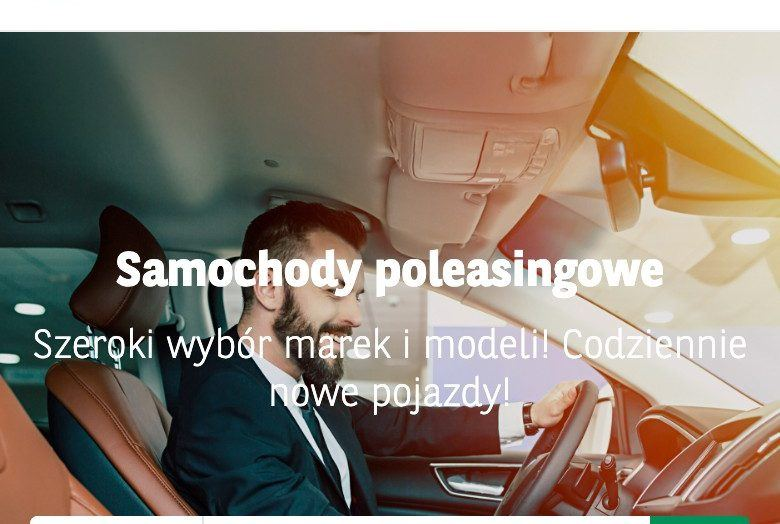
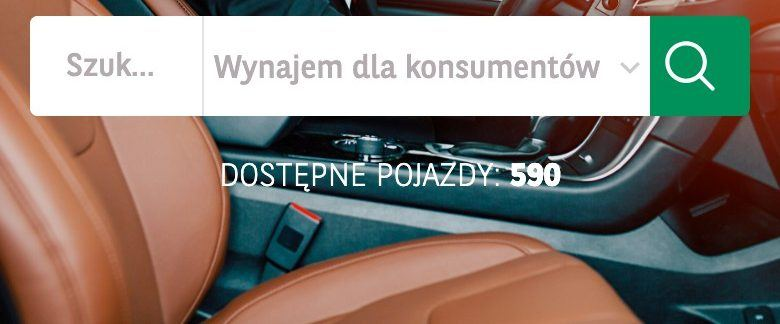
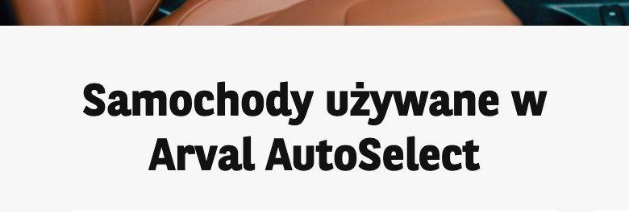
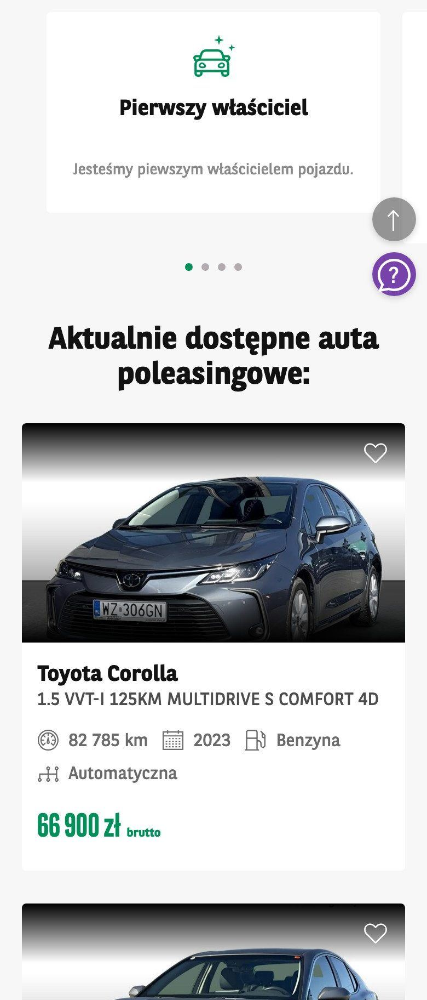
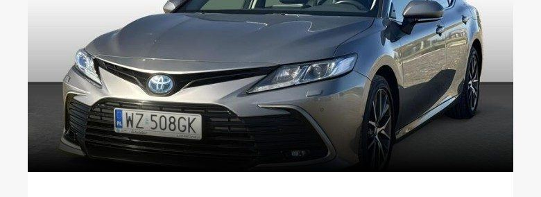
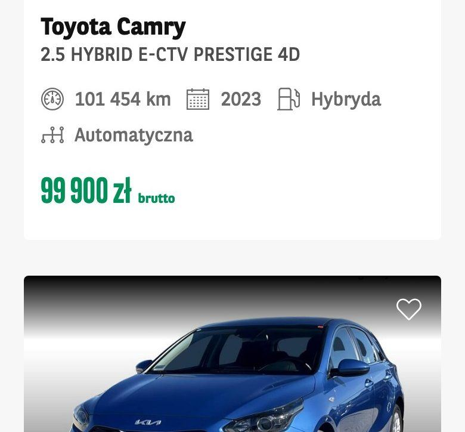
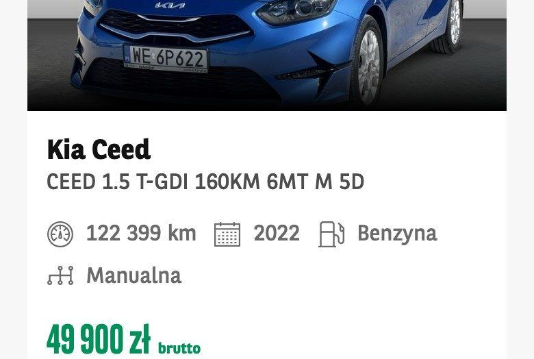
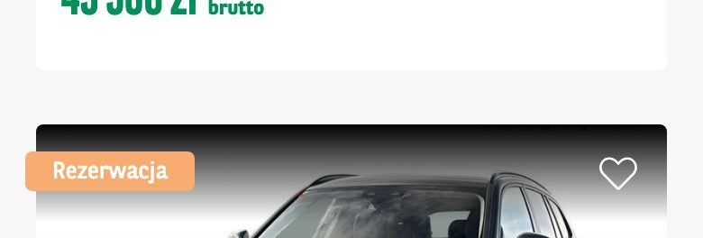
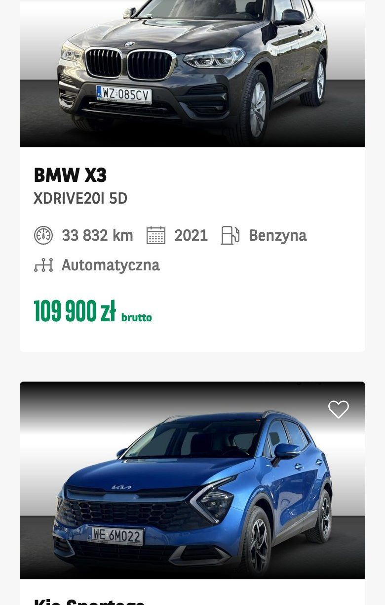
7 elementów · 7 z werdyktem
Co jest na stronie i w jakiej kolejności widzi to klient. Strona ma 3948 px wysokości.
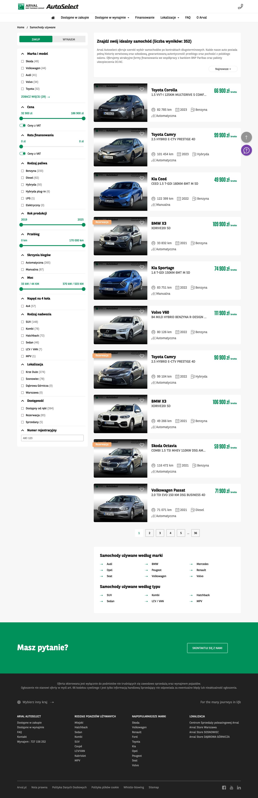
1 2 3 4 5 6 7| # | Etykieta (jak na stronie) | Element | Obserwacje | Etap i funkcja na ścieżce zakupowej | Od góry strony |
|---|---|---|---|---|---|
| 1 | Arval AutoSelect · Logo · Menu | Sticky header | Klikalne: logo → HP, każdy menu link → sekcja, ikona ulubione → lista, ikona kontakt → formularz. | brak opisu | 0 px |
| 2 | Strona: Dostępne w zakupie / Breadcrumb | page_title_breadcrumb | Klikalne: każdy poziom breadcrumb → cofnięcie do sekcji nadrzędnej. | brak opisu | 60 px |
| 3 | Filtry: Marka, Cena, Przebieg, Rok, Skrzynia biegów, Paliwo | filter_panel_sidebar | Klikalne: każdy checkbox, każdy slider, przycisk Pokaż wyniki → zaktualizuj listę pojazdów. | brak opisu | 140 px |
| 4 | Opcje sortowania: Najnowsze, Cena (rosnąco/malejąco) | sort_bar | Klikalne: dropdown → zmiana sorowania listingu. | brak opisu | 140 px |
| 5 | Lista pojazów - siatka kartek | products_list_grid | Klikalne: kartka pojazdu → PDP pojazdu, ikona serca → dodaj/usuń z ulubionych. | brak opisu | 190 px |
| 6 | Paginacja: poprzednia, numery stron, następna | pagination_controls | Klikalne: każdy numer strony → załadowanie tamtej strony, strzałki → poprzednia/następna strona. | brak opisu | 3290 px |
| 7 | Footer - Menu + linki + copyrights | footer | Klikalne: wszystkie linki w footerze. | brak opisu | 3340 px |
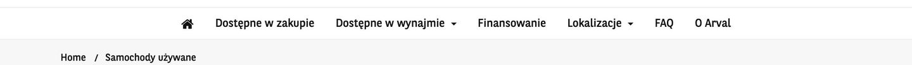
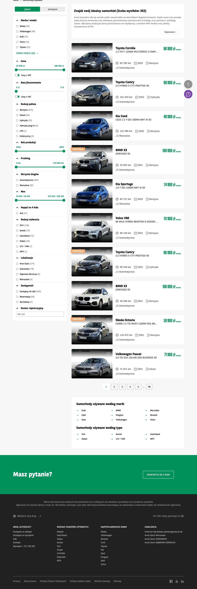
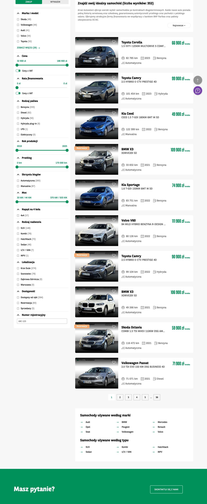
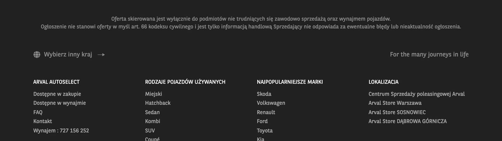
8 elementów · 8 z werdyktem
Co jest na stronie i w jakiej kolejności widzi to klient.
| # | Etykieta (jak na stronie) | Element | Obserwacje | Etap i funkcja na ścieżce zakupowej | Od góry strony |
|---|---|---|---|---|---|
| 1 | Arval AutoSelect · Logo · Hamburger | Sticky header | Klikalne: logo → HP, hamburger → menu. | brak opisu | 0 px |
| 2 | Tytuł: Dostępne w zakupie | page_title_mobile | Statyczne. | brak opisu | 50 px |
| 3 | Przycisk: Filtry (toggle) | filter_toggle_button | Klikalne: toggle → pokaż/ukryj filtry. | brak opisu | 110 px |
| 4 | Sortowanie - dropdown | sort_dropdown_mobile | Klikalne: dropdown → zmiana sorowania. | brak opisu | 155 px |
| 5 | Panel filtrów - modal (hidden by default) | filter_panel_modal | Klikalne: filtry, przycisk → zamknij modal i załaduj wyniki. | brak opisu | 0 px |
| 6 | Lista pojazów - vertical stack | products_list_vertical | Klikalne: kartka → PDP, serca → wishlist, scroll → więcej pojazdów. | brak opisu | 200 px |
| 7 | Paginacja - mobile | pagination_mobile | Klikalne: numery stron, przycisk następna. | brak opisu | 5700 px |
| 8 | Footer - mobile | footer_mobile | Klikalne: wszystkie linki. | brak opisu | 5760 px |

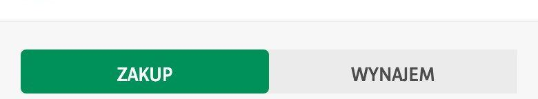
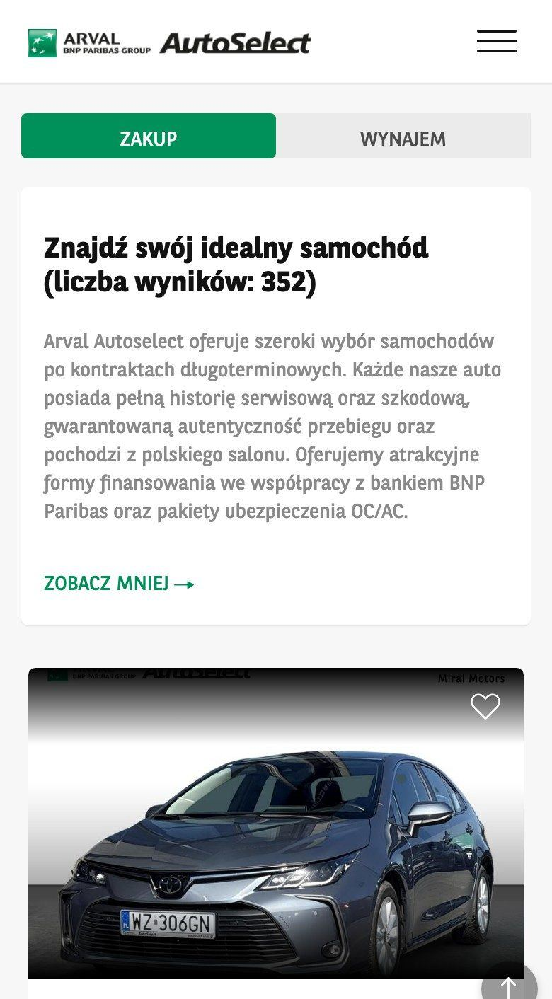
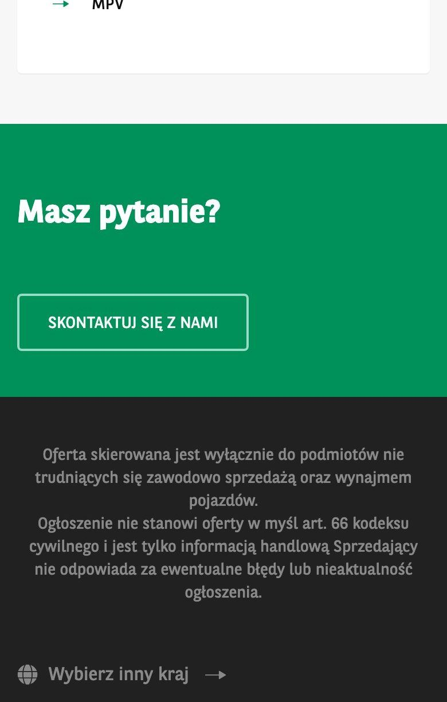
9 elementów · 9 z werdyktem
Co jest na stronie i w jakiej kolejności widzi to klient.
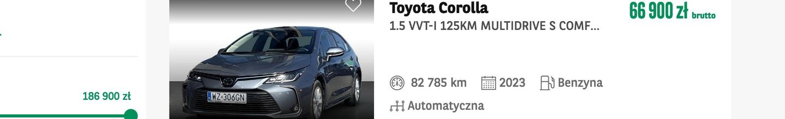
1 2 3 4 5 6 7 8 9| # | Etykieta (jak na stronie) | Element | Obserwacje | Etap i funkcja na ścieżce zakupowej | Od góry strony |
|---|---|---|---|---|---|
| 1 | zdjęcie · Toyota Corolla | Zdjęcie główne | Wzrokowa ocena stanu i atrakcyjności pojazdu — kupujący decyduje o zainteresowaniu ofertą na podstawie zdjęcia. | 0 px | |
| 2 | ♡ | Przycisk wishlist | Pozwala zapisać ofertę do porównania bez wchodzenia w szczegóły — zmniejsza tarcie przy przeglądaniu wielu ofert. | 8 px | |
| 3 | Toyota Corolla | Marka na karcie | Identyfikuje pojazd — kupujący ocenia dopasowanie modelu do potrzeb. | 4 px | |
| 4 | 66 900 zł brutto | Cena aktualna | Pierwsza liczba zestawiana z budżetem — decyduje o filtracji oferty. | 4 px | |
| 5 | 1.5 VVT-I 125KM MULTIDRIVE S COMF... | Pełna nazwa wersji pojazdu | Precyzuje specyfikację techniczną — kupujący ocenia dopasowanie napędu i wersji do wymagań. | 38 px | |
| 6 | 82 785 km | Przebieg km na kaflu | Wskaźnik zużycia — niska wartość zwiększa atrakcyjność oferty leasingowej. | 92 px | |
| 7 | 2023 | Rok produkcji na kaflu | Pozwala ocenić wiek pojazdu — nowszy rocznik to niższe ryzyko ukrytych usterek. | 92 px | |
| 8 | Benzyna | Rodzaj paliwa na kaflu | Filtr techniczny i kosztowy — kupujący wyklucza lub zatrzymuje ofertę na podstawie rodzaju napędu. | 92 px | |
| 9 | Automatyczna | Decyduje o komforcie jazdy — wielu kupujących ma twarde preferencje dotyczące skrzyni (auto vs manual). | 122 px |
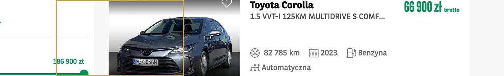
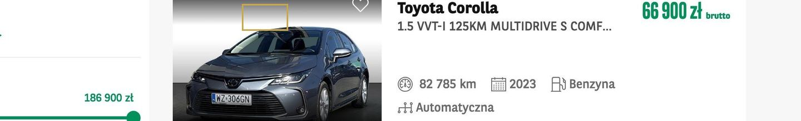
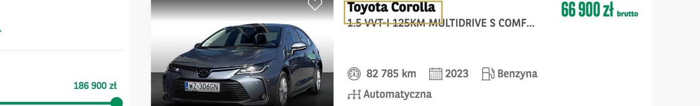
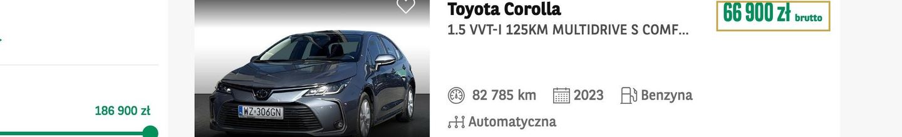
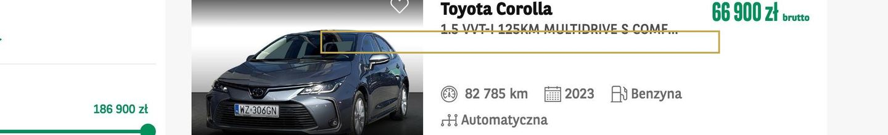
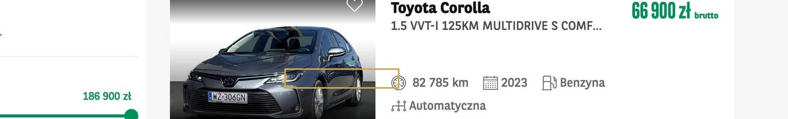
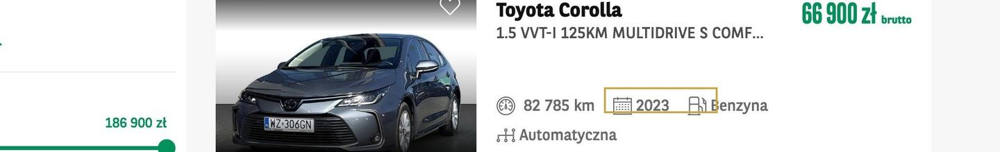
17 elementów · 17 z werdyktem
Co jest na stronie i w jakiej kolejności widzi to klient. Strona ma 4466 px wysokości.
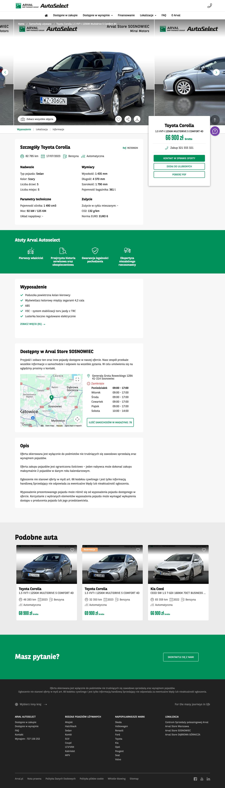
1 2 3 4 5 6 7 8 9 10 11 12 13 14 15 16 17| # | Etykieta (jak na stronie) | Element | Obserwacje | Etap i funkcja na ścieżce zakupowej | Od góry strony |
|---|---|---|---|---|---|
| 1 | ARVAL BNP PARIBAS GROUP AutoSelect | header_logo_bar | Klikalne: logo → strona główna, ikona telefonu → numer kontaktowy. | Identyfikuje markę sprzedawcy (Arval — flota BNP Paribas) i daje szybki dostęp do telefonu. Kupujący widzi to w każdym widoku, zanim zacznie czytać ofertę. | 0 px |
| 2 | Dostępne w zakupie · Dostępne w wynajmie · Finansowanie · Lokalizacje · FAQ · O Arval | nav_menu_bar | Klikalne: każdy element nawigacji → odpowiednia sekcja serwisu. | Pozwala kupującemu sprawdzić inne kategorie pojazdów lub przejść do sekcji finansowania, gdy cena gotówkowa go nie interesuje, ale wynajem długoterminowy może. | 65 px |
| 3 | Home / Samochody używane / Toyota Corolla 1.5 VVT-i 125KM Multidrive S Comfort 4d | breadcrumb_nav | Klikalne: 'Home' → HP, 'Samochody używane' → listing. Ostatni poziom (bieżąca oferta) statyczny. | Potwierdza kupującemu, że jest na stronie konkretnego auta w sekcji używanych. Umożliwia powrót do listingu bez przycisku 'wstecz' — kluczowe przy porównywaniu kilku ofert. | 110 px |
| 4 | Toyota Corolla · carousel fullwidth · Zobacz wszystkie zdjęcia | gallery_slider | Klikalne: strzałki ← → zmiana zdjęcia, 'Zobacz wszystkie zdjęcia' → lightbox/galeria full. Ikony: serce, udostępnianie, pobierz. | Kupujący ocenia stan wizualny auta (kolor, karoseria, tablica) bez wizyty w salonie. Pełna galeria (72 slajdy) zastępuje fizyczne oglądanie pojazdu na etapie wstępnej selekcji. | 110 px |
| 5 | Toyota Corolla / 1.5 VVT-I 125KM MULTIDRIVE S COMFORT 4D | purchase_panel_title | Statyczne. Karta unosi się nad galerią / nakłada na nią po prawej stronie (pozycjonowanie absolutne lub sticky). | Potwierdza kupującemu model i pełną wersję wyposażeniową auta — decydujące przy porównywaniu kilku podobnych Corolla w różnych specyfikacjach. | 650 px |
| 6 | 66 900 zł brutto | purchase_panel_price | Statyczne. Cena podana w kwocie brutto. | Kupujący weryfikuje cenę gotówkową brutto i porównuje z budżetem zanim zdecyduje się na kontakt z dealerem. | 755 px |
| 7 | Zakup 321 555 321 | purchase_panel_phone | Klikalny na urządzeniach mobilnych (tel:). Na desktopie wyświetla numer do zadzwonienia. | Daje kupującemu szybki kontakt telefoniczny jako alternatywę do formularza — istotne dla tych, którzy wolą rozmawiać niż pisać przed podjęciem decyzji. | 810 px |
| 8 | KONTAKT W SPRAWIE OFERTY · DODAJ DO ULUBIONYCH · POBIERZ PDF | purchase_panel_cta | Klikalne: 'KONTAKT W SPRAWIE OFERTY' → formularz/kontakt dealera; 'DODAJ DO ULUBIONYCH' → wishlist; 'POBIERZ PDF' → specyfikacja PDF. | Grupuje trzy akcje konwersyjne: natychmiastowy kontakt, zachowanie oferty do porównania i pobranie pełnej specyfikacji. Kupujący wchodzi w relację z dealerem lub zachowuje ofertę na późniejszą decyzję. | 855 px |
| 9 | Wyposażenie | Lokalizacja | Informacje | section_sticky_subnav | Klikalne: każdy link → scroll do odpowiedniej sekcji na stronie. Element sticky — pozostaje przy górze okna podczas przewijania. | Skraca czas dostępu do kluczowych informacji — kupujący może przejść bezpośrednio do wyposażenia lub lokalizacji bez ręcznego przewijania kilku ekranów. | 710 px |
| 10 | Szczegóły Toyota Corolla · Ref. WZ306GN · 82 785 km · 17/07/2023 · Benzyna · Automatyczna | specs_table_left | Statyczne. Dane techniczne zaczerpnięte z dokumentacji pojazdu. Układ napędowy i zużycie mieszane pokazują dash (-). | Kupujący weryfikuje kluczowe parametry techniczne (przebieg, rok, spalanie, wymiary) by potwierdzić, że pojazd pasuje do jego potrzeb przed kontaktem z dealerem. | 757 px |
| 11 | Atuty Arval Autoselect · Pierwszy właściciel · Przejrzysta historia serwisowa oraz ubezpieczeniowa · Gwarancja legalności pochodzenia · Ekspertyza niezależnego rzeczoznawcy | trust_atuty_band | Statyczne. Elementy nieinteraktywne. | Zmniejsza niepewność kupującego co do wiarygodności pojazdu z floty leasingowej — 4 atrybuty odpowiadają na typowe obawy przy zakupie auta używanego (historia, stan techniczny, legalność). | 1304 px |
| 12 | Wyposażenie · ZOBACZ WIĘCEJ (81) → | equipment_section | Klikalny: 'ZOBACZ WIĘCEJ (81)' → rozwinięcie pełnej listy 81 elementów wyposażenia. | Kupujący weryfikuje wyposażenie komfortowe i bezpieczeństwa (ABS, VSC, poduszki) by upewnić się, że auto spełnia minimalne oczekiwania przed wizytą u dealera. | 1550 px |
| 13 | Dostępny w Arval Store SOSNOWIEC · Generała Grota Roweckiego 129A, 41-214 Sosnowiec · ILOŚĆ SAMOCHODÓW W MAGAZYNIE: 78 | dealer_location_section | Klikalne: mapa Google → nawigacja, przycisk magazynu → prawdopodobnie listing magazynu Sosnowiec. | Kupujący sprawdza lokalizację salonu i dostępność godzin, by zaplanować wizytę i obejrzenie konkretnego auta. Przycisk '78 samochodów' może skłonić do przejrzenia innych opcji w tym miejscu. | 1916 px |
| 14 | Opis | opis_section | Statyczne. Treść czysto prawna — określa warunki i ograniczenia zakupu poleasingowego. | Informuje kupującego o ograniczeniu 2 pojazdów rocznie i warunkach sprzedaży poleasingowej — istotne dla firm planujących zakup floty lub osoby fizycznej rozważającej zakup dla rodziny. | 2450 px |
| 15 | Podobne auta · Toyota Corolla 1.5 VVT-I 46 283 km 2023 68 900 zł · Toyota Corolla 1.5 VVT-I 32 350 km 2023 69 900 zł · Kia Ceed CEED SW 1.5 T-GDI 83 359 km 2022 66 900 zł | similar_cars_section | Klikalne: każda karta → PDP innego pojazdu. Ikona serca → dodaj do ulubionych. Jeden z wyników zawiera oznaczenie 'Rezerwacja'. | Kupujący porównuje przebiegi i ceny zbliżonych egzemplarzy (dwie Corolle po 68 900 i 69 900 zł) by ocenić, czy oglądany pojazd oferuje najlepszą wartość spośród dostępnych. | 2961 px |
| 16 | Masz pytanie? SKONTAKTUJ SIĘ Z NAMI | contact_cta_band | Klikalny: przycisk 'SKONTAKTUJ SIĘ Z NAMI' → formularz lub strona kontaktowa. | Ostatni punkt kontaktu przed stopką — przechwytuje kupujących, którzy przeczytali całą stronę i mają jeszcze pytania (np. dotyczące prawa pierwokupu lub finansowania). | 3597 px |
| 17 | ARVAL AUTOSELECT · RODZAJE POJAZDÓW UŻYWANYCH · NAJPOPULARNIEJSZE MARKI · LOKALIZACJA · Arval.pl · Nota prawna · Polityka Danych Osobowych | footer | Klikalne: wszystkie linki nawigacyjne, kolumny marek i typów pojazdów (SEO), lokalizacje salonów, linki prawne. | Umożliwia przejście do innych lokalizacji Arval lub kategorii pojazdów. Linki brandowe i typów nadwozia działają jako sieć wewnętrzna dla kupujących szukających konkretnej marki lub segmentu. | 3850 px |
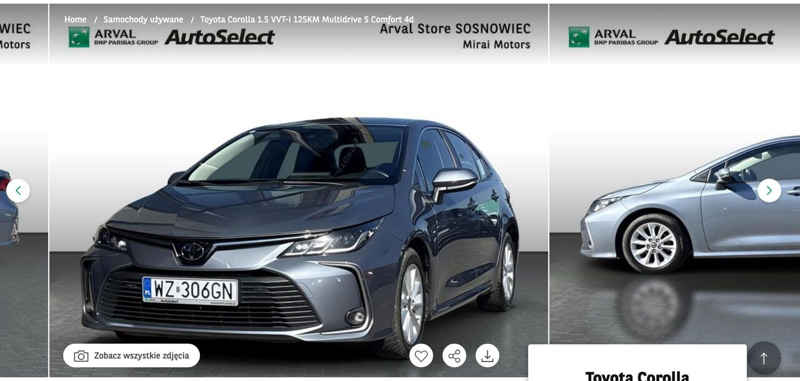
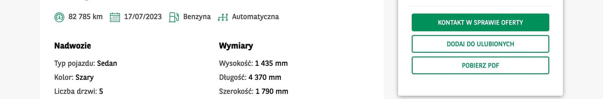
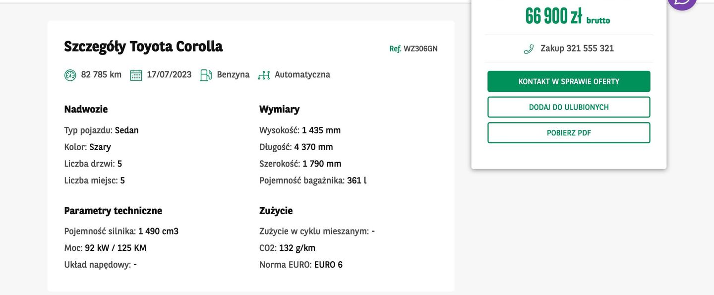
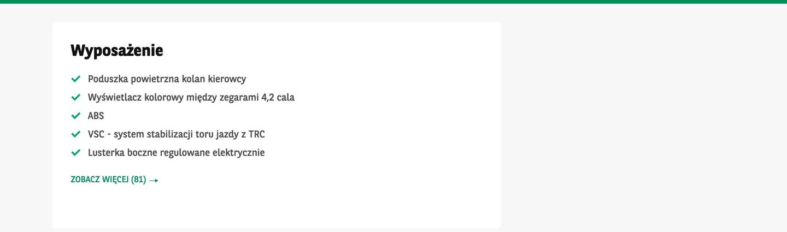
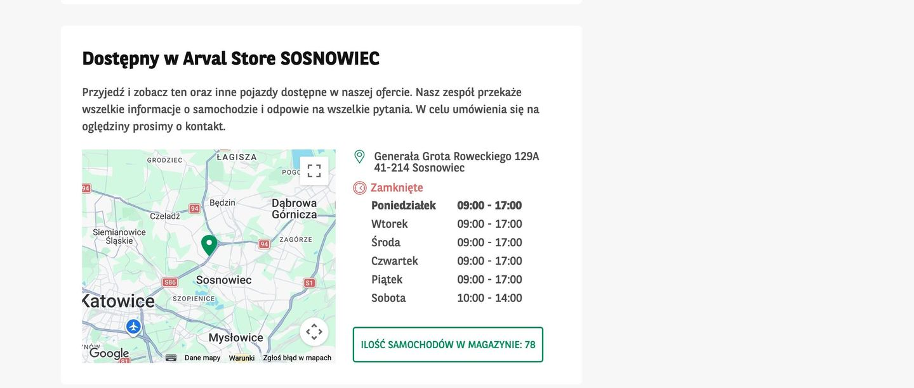
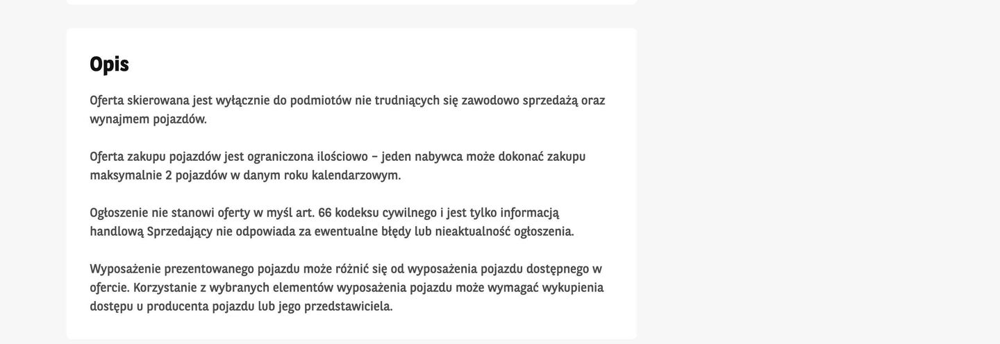
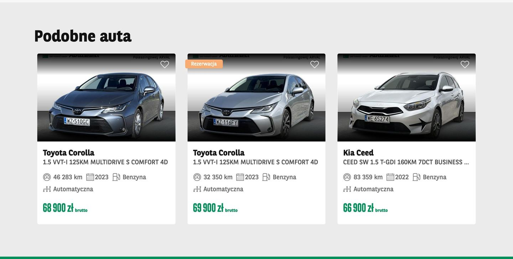
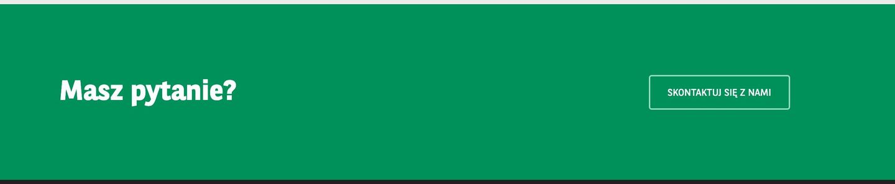
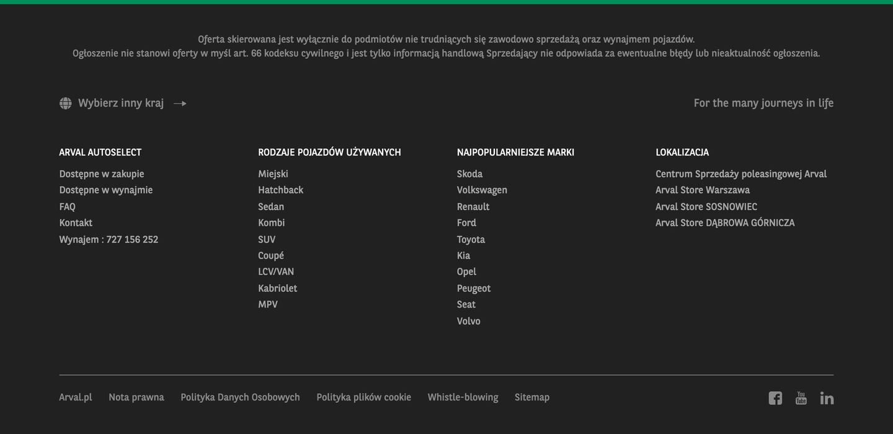
16 elementów · 16 z werdyktem
Co jest na stronie i w jakiej kolejności widzi to klient.
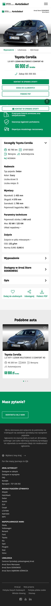
1 2 3 4 5 6 7 8 9 10 11 12 13 14 15 16| # | Etykieta (jak na stronie) | Element | Obserwacje | Etap i funkcja na ścieżce zakupowej | Od góry strony |
|---|---|---|---|---|---|
| 1 | Arval AutoSelect · Logo · Hamburger | Sticky header | Klikalne: logo → HP, hamburger → menu. | brak opisu | 0 px |
| 2 | Breadcrumb - horizontal scroll | breadcrumb_mobile | Klikalne: każdy poziom breadcrumb. | brak opisu | 50 px |
| 3 | Galeria zdjęć pojazdu - carousel | product_gallery_mobile | Klikalne: thumbnail → zmiana głównego zdjęcia, strzałki → przewijanie. | brak opisu | 80 px |
| 4 | Marka Model · Rok | product_title_mobile | Statyczne. | brak opisu | 380 px |
| 5 | Gwiazdki · Liczba opinii | rating_mobile | Klikalne: link opinii. | brak opisu | 430 px |
| 6 | Cena brutto/netto · Przebieg | price_mobile | Statyczne. | brak opisu | 460 px |
| 7 | Szybkie parametry - ikonki | key_specs_mobile | Statyczne. | brak opisu | 520 px |
| 8 | CTA: Zapytaj · Dodaj do ulubionych | cta_buttons_mobile | Klikalne: główny button → formularz kontaktu, love icon → wishlist, compare → porównanie. | brak opisu | 600 px |
| 9 | Pełna specyfikacja - accordion | full_specs_mobile | Klikalne: każdy accordion → rozwiń/zwiń. | brak opisu | 700 px |
| 10 | Opis pojazdu · Wyposażenie | description_mobile | Statyczne/scrollowalne. | brak opisu | 1100 px |
| 11 | Dane sprzedawcy - compact | seller_info_mobile | Klikalne: email → mailto, telefon → tel:. | brak opisu | 1350 px |
| 12 | Finansowanie - wersja mobile | financing_mobile | Klikalne: kalkulator, link szczegóły. | brak opisu | 1500 px |
| 13 | Opinie - skrócona lista | reviews_mobile | Klikalne: 'Pokaż więcej' → expand. | brak opisu | 1700 px |
| 14 | Podobne pojazdy - vertical | related_vehicles_mobile | Klikalne: kartka → PDP pojazdu. | brak opisu | 1950 px |
| 15 | FAQ - accordion | faq_mobile | Klikalne: każdy accordion → rozwiń. | brak opisu | 2550 px |
| 16 | Footer - mobile | footer_mobile | Klikalne: wszystkie linki. | brak opisu | 2750 px |

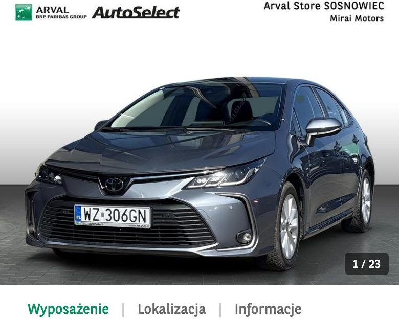
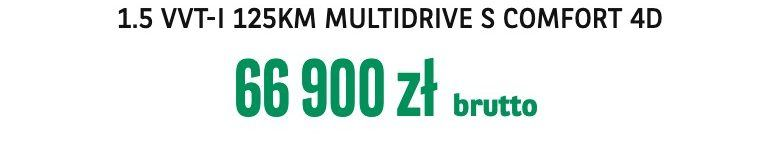
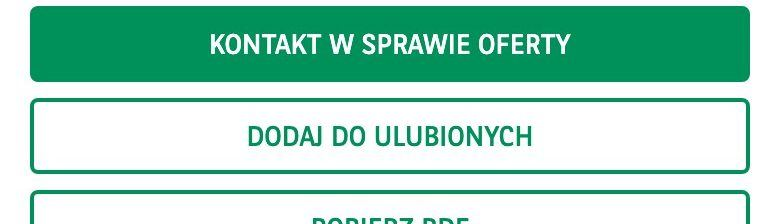
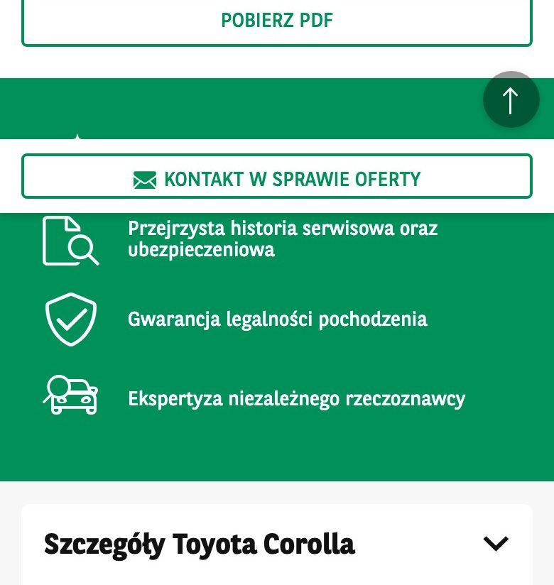
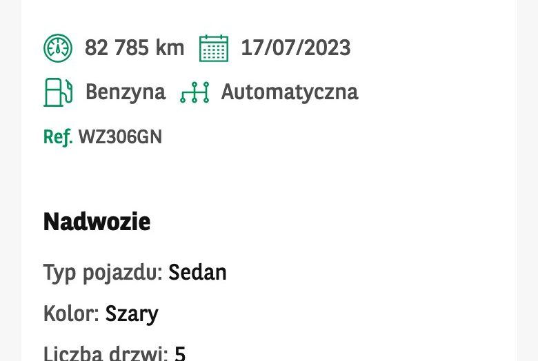
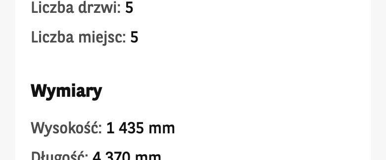
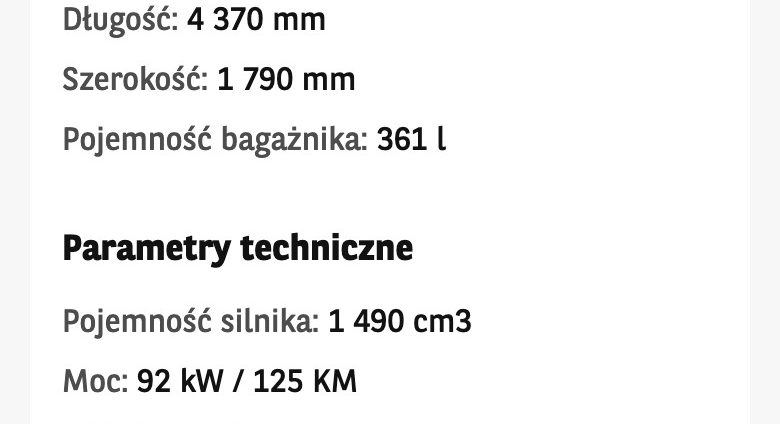
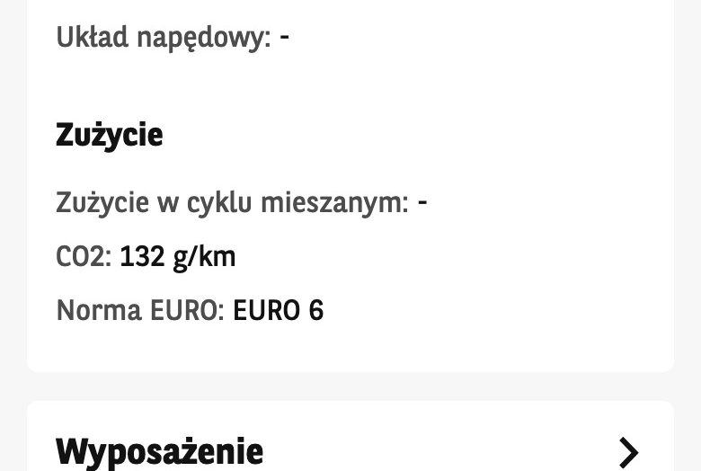